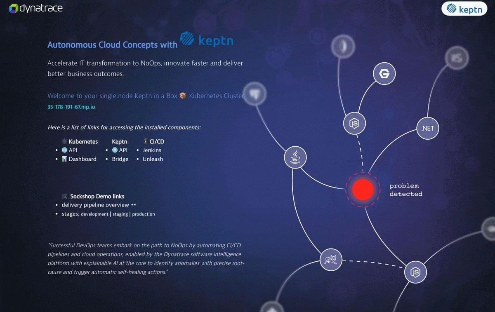
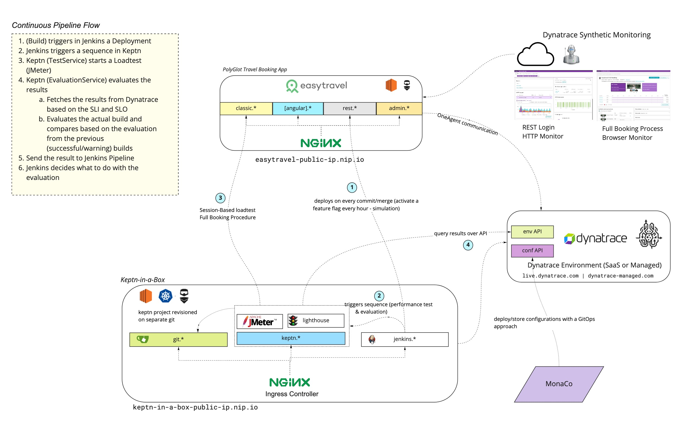
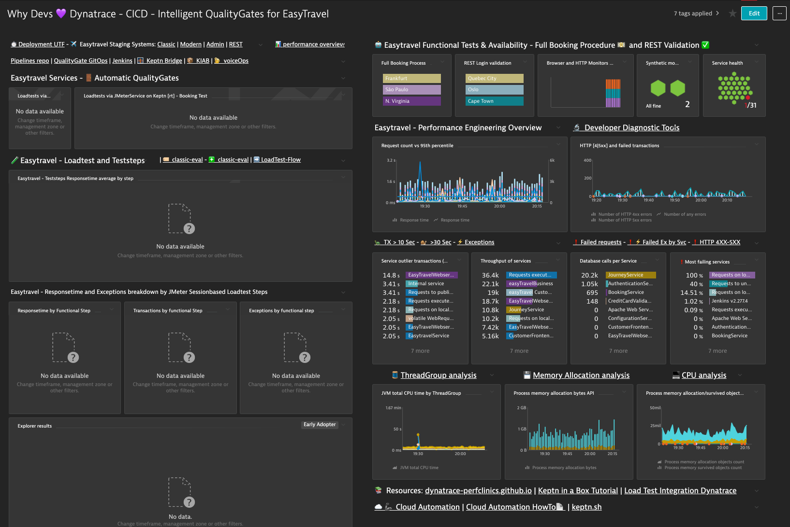
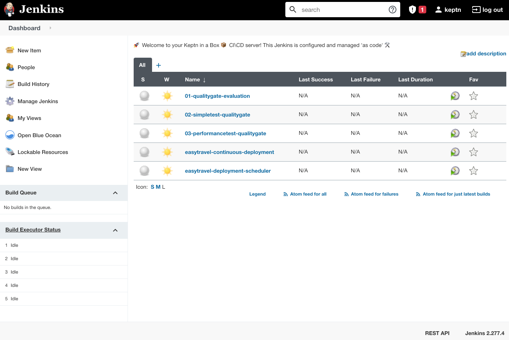
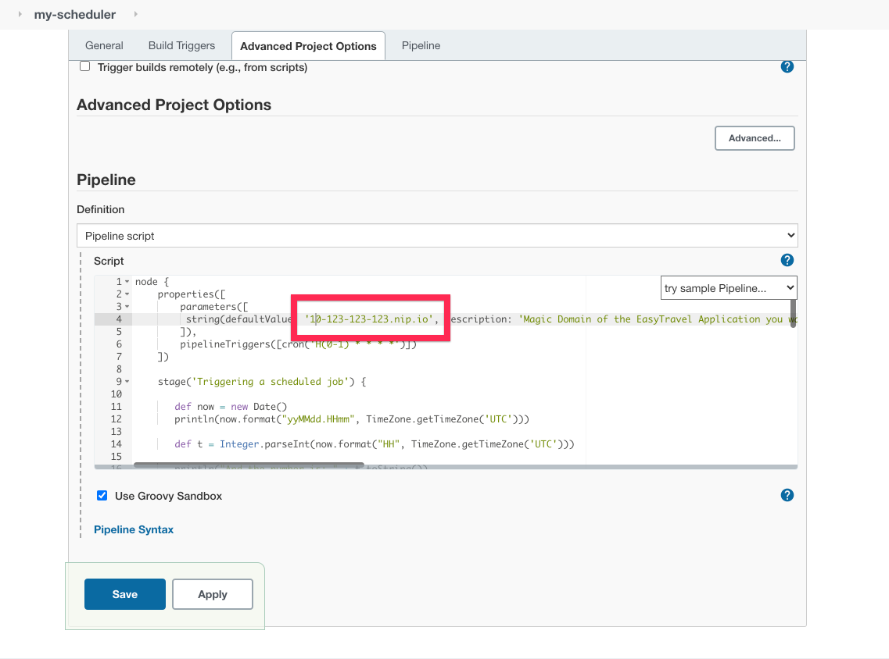
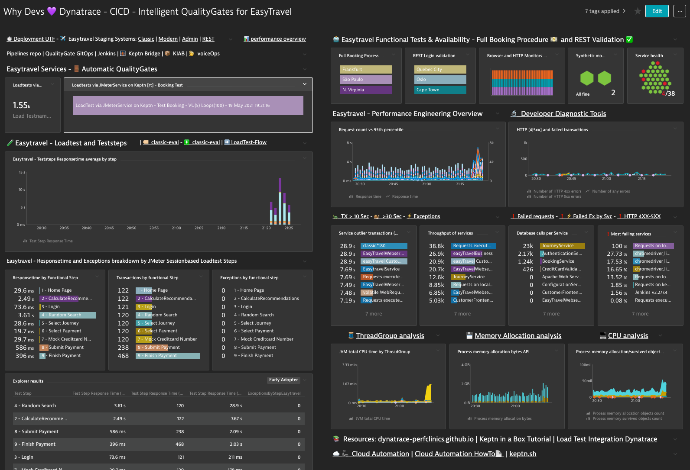

We will level up our manual testing with continuous validations with the help of Synthetic Testing. Testing REST Microservices and FullBrowser evaluations and tests we make sure that the key functionalities we developed works as designed and expected in every release and stage automatically.

Performance Problems, Scalability issues and Optimizations can be unveiled under load 🔥. Exactly where the application is needed the most (under load) is where it should NOT fail. It's important to unveil the limits of each application, understand if it can scale horizontally and/or vertically so it can be sized properly and not waste resources (money) just because of not knowing the limits of a system. This is why automated quality gates with automated performance testing, validation and release comparison is so important. Make sure automatically that every release works, every important KPI is fulfilled such as business, architecture, infrastructure and performance SLOs (Service Level Objectives) by every pull requests or merge on a branch. We will understand how the Quality Gate works, how the Load test is automatically integrated in Dynatrace and how all systems such as AzureDevOps, the application, Keptn and Dynatrace form an ecosystem and are tight together.
In this Episode we will explain the CICD environment, the QualityGates, the session-based load test, the SLI/SLOs and best practices on them such as validate the end2end functionality of a system, the vertical stack and shift business KPIs into the validation. We will also learn how the integration works and the foundations of loadtest analysis with Dynatrace.
In Episode 2 of this Performance Clinic Series, we will set up a continuous CICD Pipeline with an automatic & Intelligent QualityGate. We want to simulate on every git merge or git commit on a branch to automate performance tests with a Full-Stack End-End Evaluation of each release.


We will set up a Single Node Kubernetes Server, for this we will use Keptn in a Box. Keptn-In-A-Box is a Bash script that will convert a plain Ubuntu machine in a Single Node Kubernetes Cluster with Keptn installed and configured (among other cool features which will set sail for your autonomous cloud journey). The script is programmed in a modular way so you can select the 🧩 installationBundle.
Keptn-in-a-Box is a 🚀 rocket launcher for enabling tutorials or workshops in an easy, fast and ressource efficient way.
In a matter of minutes you'll have a fully configured Single Node Kubernetes Cluster for learning Keptn tutorials, trying out new functionalities, building your own pipeline or even delivering Performance-as-a-Self-Service.
If you want to learn more about Keptn or Keptn in a Box we recommend you to start with this tutorials

Get your Ubuntu Box.
For Sizing and how to get a free Cloud Account check out this page. We recommend though to use an xlarge with 20 gigs of disk space.
💻 Login to your Ubuntu
When your Ubuntu machine is up and running, let's log in into it.
ssh yourusername@the-bind-ip-or-dns
Download keptn-in-a-box.sh
Now let's download the keptn-in-a-box.sh file and make it executable.
curl -O https://raw.githubusercontent.com/keptn-sandbox/keptn-in-a-box/release-0.8.2/keptn-in-a-box.sh
chmod +x keptn-in-a-box.sh
Enter your Dynatrace Credentials
Get your Dynatrace Tokens, in Episode 1 we already created an API and a PaaS Token.
In the keptn-in-a-box.sh file enter your credentials under the section "Define Dynatrace Environment". For editing the file use vi or vim.
# ---- Define Dynatrace Environment ----
# Sample: https://{your-domain}/e/{your-environment-id} for managed or https://{your-environment-id}.live.dynatrace.com for SaaS
TENANT="https://mytenant.live.dynatrace.com"
PAASTOKEN="myDynatracePaaSToken"
APITOKEN="myDynatraceApiToken"
Select the DevLove Installation Bundle
🧩 We created an installation Bundle for this PerformanceClinic called installationBundleDevLove 😎. Scroll down to the Installation Bundle section, comment out the Demo and add the installationBundleDevLove like this:
# ==================================================
# ----- Select your installation Bundle ----- #
# ==================================================
# - Comment out if selecting another bundle
#installationBundleDemo
# - Comment out if only want to install the Performance Clinic 'Why Devs love Dynatrace' Bundle
installationBundleDevLove
More about installation Bundles here
Execute the script
Yay! now let's see Keptn-in-a-box in action 🤘!. Run the script with sudo rights and send the process to the background.
sudo bash -c './keptn-in-a-box.sh &'
This will create a single node kubernetes cluster for you already configured for this performance clinic.
🔍Inspect the script at runtime
To inspect how the installation is going, type
less +F /tmp/kiab-install.log
This will open the installation log and read from the input stream. To exit just type CTRL + C and then quit.
Access your services
At the end of the installation file you should see something similar:
[Keptn-In-A-Box|INFO]|============ Installation complete :) ============
[Keptn-In-A-Box|INFO]|______________________________________________________________________
[Keptn-In-A-Box|INFO]|>->-> It took 9 minutes and 32 seconds <-<-<|
[Keptn-In-A-Box|INFO]|======================================================================
[Keptn-In-A-Box|INFO]|============ File System usage ============
[Keptn-In-A-Box|INFO]|______________________________________________________________________
[Keptn-In-A-Box|INFO]|>->-> Disk used size 1K Blocks: 10969472 <-<-<|
[Keptn-In-A-Box|INFO]|>->-> Disk used size in IEC Format: 11G <-<-<|
[Keptn-In-A-Box|INFO]|======================================================================
[Keptn-In-A-Box|INFO]|============ Keptn & Kubernetes Exposed Ingress Endpoints ============
[Keptn-In-A-Box|INFO]|______________________________________________________________________
[Keptn-In-A-Box|INFO]|>->-> Below youll find the adresses and the credentials to the exposed services. <-<-<|
[Keptn-In-A-Box|INFO]|>->-> We wish you a lot of fun in your Autonomous Cloud journey! <-<-<|
NAMESPACE NAME CLASS HOSTS ADDRESS PORTS AGE
default k8-api-ingress <none> api.kubernetes.18-130-223-01.nip.io 127.0.0.1 80, 443 5m9s
kube-system k8-dashboard-ingress <none> kubernetes.18-130-223-01.nip.io 127.0.0.1 80, 443 5m9s
istio-system istio-ingress <none> * 127.0.0.1 80, 443 5m8s
keptn api-keptn-ingress <none> keptn.18-130-223-01.nip.io 127.0.0.1 80, 443 3m5s
default homepage-ingress <none> 18-130-223-01.nip.io 127.0.0.1 80, 443 2m48s
jenkins jenkins-ingress <none> jenkins.18-130-223-01.nip.io 127.0.0.1 80, 443 84s
git gitea-ingress <none> git.18-130-223-01.nip.io 127.0.0.1 80, 443 86s
[Keptn-In-A-Box|INFO]|======================================================================
[Keptn-In-A-Box|INFO]|============ Jenkins-Server Access ============
[Keptn-In-A-Box|INFO]|______________________________________________________________________
[Keptn-In-A-Box|INFO]|>->-> Username: keptn <-<-<|
[Keptn-In-A-Box|INFO]|>->-> Password: keptn#R0cks <-<-<|
[Keptn-In-A-Box|INFO]|======================================================================
[Keptn-In-A-Box|INFO]|============ Git-Server Access ============
[Keptn-In-A-Box|INFO]|______________________________________________________________________
Domain has been passed: 18-130-223-01.nip.io
Username: keptn
Password: keptn#R0cks
GIT-Server: http://git.18-130-223-69.nip.io
[Keptn-In-A-Box|INFO]|>->-> ApiToken to be found on ~/keptn-in-a-box/resources/gitea/keptn-token.json <-<-<|
[Keptn-In-A-Box|INFO]|>->-> For migrating keptn projects to your self-hosted git repository afterwards just execute the following function: <-<-<|
[Keptn-In-A-Box|INFO]|>->-> cd ~/keptn-in-a-box/resources/gitea/ && source ./gitea-functions.sh; createKeptnRepoManually {project-name} <-<-<|
[Keptn-In-A-Box|INFO]|======================================================================
[Keptn-In-A-Box|INFO]|============ Workshop User Access (SSH Access) ============
[Keptn-In-A-Box|INFO]|______________________________________________________________________
[Keptn-In-A-Box|INFO]|>->-> ssh student@18-130-223-01.nip.io <-<-<|
[Keptn-In-A-Box|INFO]|>->-> Password: secr3t <-<-<|
[Keptn-In-A-Box|INFO]|======================================================================
[Keptn-In-A-Box|INFO]|============ Keptn in a Box release-0.8.2 installation finished. ============
[Keptn-In-A-Box|INFO]|______________________________________________________________________
[Keptn-In-A-Box|INFO]|>->-> Good luck in your Autonomous Cloud Journey!! <-<-<|
[Keptn-In-A-Box|INFO]|>->-> If you faced an issue or just want to say hi, come by @ https://keptn.slack.com/ <-<-<|
💻 Configured clients
The clients are configured and ready to use helm, istioctl,kubectl, docker and keptn. You need to reload the shell (if you have not done it since the installation) so the paths can be found.
Monaco stands for Monitoring As Code. In Dynatrace we love to automate. With monaco we can automate the configuration of one or multiple environments following a GitOps approach.
We will import the following configurations following a GitOps approach:
- Management Zones
- Automated Tagging
- Request Attributes
- Dashboards
- Application Definition
- Calculated Service Metrics
- Load Testing Integration
Download Monaco
Download the latest release (depending the architecture of your OS) and add the binary to your path.
Check that you can execute the binary
monaco --help
Clone the GitOps configuration
git clone https://github.com/dynatrace-perfclinics/why-devs-love-dynatrace
Navigate to the GitOps directory
cd why-devs-love-dynatrace/monaco/devlove
Add your variables to a helper script set_dt_variables.sh
vi set_dt_variables.sh
My file looks something like this:
# Sample: https://{your-domain}/e/{your-environment-id} for managed or https://{your-environment-id}.live.dynatrace.com for SaaS
DT_TENANT_URL=https://gab265.dynatrace-managed.com/e/XXXXXXXXX
# https://www.dynatrace.com/support/help/shortlink/token#create-an-api-token-
# Token in format dt0c01.STXXXX....
DT_API_TOKEN=dt0c01.2UMCWXXXXXX
DT_PAAS_TOKEN=
# DT_USER (Your login username in the environment, Click on the top right on the people icon and see your id, it can be your email or a username)
DT_USER=admin
# Magic IP for easytravel. Example if public ip == 1.2.3.4 then Magic IP => 1-2-3-4.nip.io
MIP_EASYTRAVEL=10-123-100-10.nip.io
# Magic IP for KIAB (Keptn in a Box). Example if public ip == 1.2.3.4 then Magic IP => 1-2-3-4.nip.io
MIP_KIAB=10-123-100-11.nip.io
Load the variables in the shell
source set_dt_variables.sh
Execute Monaco
monaco deploy -e environment.yaml -v
Once you have run monaco you'll notice that there is a CICD Dashboard linking all systems and showing an overview of the health of EasyTravel, it's Synthetic Monitors and the status and metrics for the Load Test integration.

Trigger the Jenkins Pipeline
On the top left there is a link to your Jenkins server. Click on it.

The login credentials to your Jenkins server are:
Username: keptn
Password: keptn#R0cks
After you have entered your server, click on "Install suggested plugins"

You'll notice a set of preconfigured pipeles. We will focus on two of them, easytravel-continuous-deployment and easytravel-deployment-scheduler

The deployment is the actual pipeline integrating with Keptn and the Scheduler will be triggered each hour with a different feature flag. There are 5 problems that we will activate and a deployment Zero which is the deployment without bad code changes.
The easiest way (that I know of) for setting up a continuous build each hour with your parameters is to recreate easytravel-deployment-scheduler. Click on the top left on New Item.

Give it a name, something like "easytravel-developers" is just fine, select pipeline and click ok.
Scroll to the bottom on the Pipeline section, and in pipeline script copy and paste this Jenkins pipeline. Which is basically the source of the easytravel-deployment-scheduler we just saw in our pipelines before.

At the top replace the default value of the DeploymentURI variable easytravel-public-ip.nip.io for the magic domain of your EasyTravel instance with the notation we have been using for example 10-123-123-123.nip.io then click Save
Now click on the small arrow next to the pipeline and trigger it by clicking build now

If you go back to your Loadtesting Dashboard in Dynatrace you'll notice that all the Loadtest are tracked automatically. How cool 😎 is that? We have set up now a continuous unbreakable pipeline with Performance as a Service and Intelligent Quality Gates.
